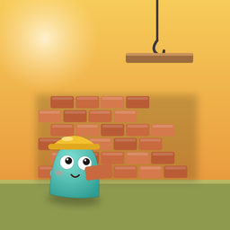
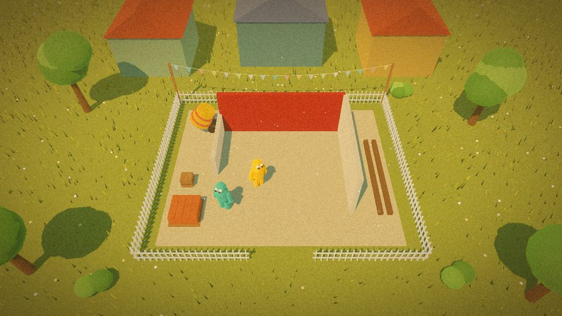

Groundwork
Dos constructores, un terreno y un cliente que sueña con un cuarto.
Próximamente

El encargo
Construyen juntos el cuarto del cliente a partir de su boceto. Tomen ladrillos del palé y colóquenlos en las líneas de tiza. Las vigas pesan: levántenla cada uno de un extremo, llévenla a lo ancho del cuarto y fíjenla. El día del colado, uno sostiene el canal mientras el otro recorre el techo, y luego el inspector lo sacude.
La cuadrilla
- Solo, con un compañero bot que hace el otro papel: constructor 1 o constructor 2.
- Juntos en dos iPhone o iPad en la misma red Wi-Fi: uno crea la partida y el otro escribe un código corto.
- O dos personas en un mismo iPad, media pantalla cada una.
- Quince lugares en el mapa de la Ciudad: cuatro fáciles, cuatro normales, cuatro difíciles y tres de experto.
Las condiciones
- Los tres primeros niveles son gratis, con todas las formas de jugar.
- "El juego completo" es una sola compra que abre los otros doce, y cada capítulo que se añada después.
- Tu compañero juega gratis: se une a tu partida desde la descarga gratuita.
- Sin anuncios, sin suscripción y sin recopilar datos. Compatible con En familia.
El equipo
- Controles táctiles pensados para los pulgares, con versión para zurdos.
- En español e inglés.
- Tablas de clasificación de Game Center para cada nivel y para el juego completo.
- Un ahorro de batería para las noches largas.